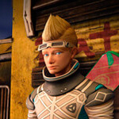

GreenCoding Experience é uma experiência de realidade virtual em que decisões do jogador transformam progressivamente uma ilha.
O projeto exigiu coordenação entre conceito, produção, tecnologia e conteúdo para manter uma visão comum durante o desenvolvimento.
A experiência foi organizada ao redor de decisões que produzem consequências visuais e ajudam o público a entender o tema.
Planejamento, acompanhamento e comunicação foram essenciais para conectar as etapas criativas e técnicas.
2 Comentários sobre o projeto
O projeto conectou produção, tecnologia e conteúdo em uma experiência imersiva.

por Equipe do projeto · DesenvolvimentoO acompanhamento entre áreas ajudou a manter uma visão comum durante a execução.
Leave a Reply